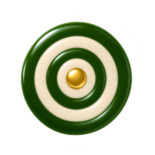
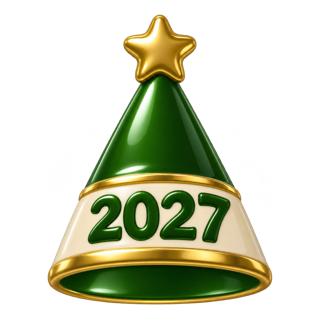
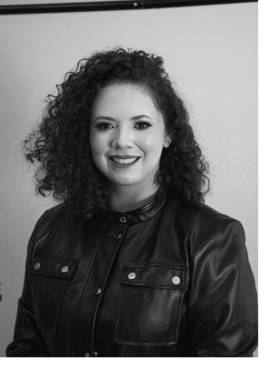

Dig through the bank app
Savings, then Goals, then a new pot, then a standing order. The app has the data and can act, but you need to know the product names first and do the maths yourself.
You have to know which feature to open.Alex knows where he's going, how much it costs and when. What he doesn't know is how much he can afford to put aside each month.
The challenge: design an AI-native mobile banking experience that turns a person's intent into a clear, trustworthy and actionable journey. The example request is one most of us have said out loud at some point.
“I want to save €3,000 for a holiday next summer, but I don't know how much I can afford to save every month.”Example request · Wit challenge brief
There are three common routes. Each one gets part of the way, then stops.
Savings, then Goals, then a new pot, then a standing order. The app has the data and can act, but you need to know the product names first and do the maths yourself.
You have to know which feature to open.€2,700 ÷ 7 months = €386. Dividing is easy. Knowing whether it fits is not: expenses come from memory, and they change every month.
Answers “how much do I need”, not “how much can I afford”.A general assistant understands the request and reasons well. But it only sees what you paste in, guesses your spending, and can't act. You still leave the chat to set it up in your bank.
Doesn't know your money and can't act on it.| Route | Understands the request | Knows your money | Can act | You stay in control |
|---|---|---|---|---|
| Bank app menus | ✕ | ✓ | ✓ | ✓ |
| Spreadsheet | ✕ | ✕ | ✕ | ✓ |
| General AI chat | ✓ | ✕ | ✕ | ~ |
| An assistant inside the bank | ✓ | ✓ | ✓ | ✓ |
I tried the third route myselfThe first version of Alex's budget was drafted in ChatGPT from typed-in figures. It didn't hold up: the month ended at −€61, the card bill went through a currency conversion, and “€94.89” sat next to “about €295”. Version 2 rebuilt the numbers from the bank's own transactions. See the AI process.
Dividing the amount by the months answers one question. Alex is asking a different one.
The second question needs data only the bank has. That is where a bank's own assistant can do something a general chatbot can't.
How can we help someone work out how much they can afford to save each month for a holiday, see what that means for their departure date, and approve a plan that fits their budget?From my challenge brief
See how much you need to save for your holiday, how much that would leave you each month, and adjust the plan before you commit.
The brief lists five things. I used them as the acceptance test for every screen, and they became the five steps of the journey.
Know the monthly deposit, what it means for August, and what stays free each month.
The request becomes a plan without opening a single menu, and approval is always explicit.
The brief sets no targets. My proposal: more recurring plans that stay active, because people understood their impact on the month.
A proto-persona built from the brief, not from research. The numbers were chosen so that the central decision is a real trade-off: reach the goal, or keep the money Alex is used to having free.
Choose a viable monthly amount and understand what this choice means for the trip.
Already knows what for, how much and when. Today about €90 is left over each month, and Alex wants to keep at least that free.
| Today | From Feb 2027 | |
|---|---|---|
| Income | €1,350 | €1,350 |
| Health | €220 | €220 |
| Internet & mobile | €24 | €24 |
| Food | €300 | €300 |
| Fuel | €150 | €150 |
| Credit card bill | €567 | €211 |
| Estimated surplus | about €90 | about €445 |
Two instalment purchases end in January and cut the card bill by €356 a month. That is why the plan starts in February.
Sources: Wit challenge statement, my challenge brief, content prototype v2. No user research: behaviours and motivations are hypotheses to validate.
Each step answers one of Alex's questions and one of the five things the challenge asks for. Hover a step to see the journey map behind it. Move the mouse sideways to travel along the path.
Step 3 is where the plan becomes Alex's own. The AI suggests the amount that reaches the goal; Alex pushes back to protect the buffer. Both consequences stay on screen.
| Monthly deposit | Free each month | By August, with the €300 | What the screen says |
|---|---|---|---|
| €350 | about €95 | €2,750 | €250 to go · keeps today's buffer |
| €370 | about €75 | €2,890 | €110 to go · below the €90 you chose |
| €386 | about €59 | €3,000 | Goal reached · below the €90 you chose |
The warning informs, it doesn't block. Alex can still review the €386 plan. Typing “What if it were €370?” moves the same slider, so conversation and controls never disagree.
Before writing any dialogue I compared three answers to Alex's request: concept cards, a decision matrix against the brief, and value against effort. Then three layouts for the winner, critiqued screen by screen.
Alex sets the goal and deadline; the AI creates a pot and schedules deposits. Answers “how can I save?”, not “how much can I?”.
It's what banks already offer. Alex still has to plan the amount alone.
Alex describes the goal; the AI calculates the amount and asks how much is usually left over. A simulator shows what's free and what's missing.
Depends on Alex's own estimate, which is one of the pains in the brief. For Alex it gives a pessimistic plan (€1,110), blind to February.
The AI reads income and expenses, estimates the surplus, and suggests flexible deposits that Alex adjusts before approving.
Answers the real question with the bank's data. Not a 10: it depends on the estimate being right and on Alex accepting the expense reading.
| Brief requirement | 1 · Piggy bank | 2 · Simulator | 3 · Financial context |
|---|---|---|---|
| Express intent without knowing the feature | Doesn't meet | Meets | Meets |
| Understand the numbers with simple visuals | Doesn't meet | Partly: only the amount Alex reports | Meets |
| Explore and adjust the recommendation | No recommendation | Meets | Meets |
| Review and approve clearly | Meets | Meets | Meets |
| Chat and controls, keeping context | Only controls | Meets | Meets |
| Answers “how much can I save?” | Doesn't meet | Depends on Alex knowing | Meets |
| Simplicity | Simpler | Intermediate | More steps, depends on data |
DecisionPrototype path 3: the only one that meets all five requirements and answers “how much can I save?” with the bank's data. Path 2 is the proposed MVP: same screens, effort 5 instead of 8, and it grows into path 3 by swapping the reported surplus for the estimated one. From path 1, the familiar amount · frequency · schedule pattern stays in the review screen.
Three low-fidelity versions of path 3, each annotated with UX principles and a “what could go wrong” list. Click to enlarge.
A fixed field on the home screen. The person leads; the AI asks before proposing.
Risk: slow and tedious, about 4 typed messages and 6 taps. Controls disappear into the history.
Floating button, taps and graphics. Answers that are interface, not just text. One message and about 8 taps.
Risk: an overloaded plan card, and accepting the €350 default without thinking.
An intent field, no conversation. The AI fills a familiar form.
Risk: misreading the request with no way to talk back. The AI can go unnoticed.
This was a critical reading of the wireframes done with AI, not a test with people. It guided the choice and still needs validation.
Path 3 has more steps and needs data access. I kept it because it's the only one that answers Alex's actual question, and proposed path 2 as the cheaper first release.
Version B suggests €350, which risks automatic acceptance. The answer: show what stays free next to every amount, and warn below the chosen buffer without blocking.
Instead of switches turned on by default, a permission sheet asks before reading the account, names what's read (account, card, 3 months), and lets Alex type the numbers instead.
The prototype runs right here. Tap through the phone or jump to a step from the list on its left. It follows Alex from the home screen to a scheduled plan, and back to the new pot.
Reduce Motion is respected, from the OS setting or the toggle in the panel. On a phone the prototype fills the screen and the step list is hidden.
Home, assistant, plan, pot: the flow never sends Alex to a menu. Structured input happens in sheets and cards inside the chat, so the context of the conversation is always one scroll away. Click any screen to enlarge it.
Motion is a token set, annotated in Figma and implemented in the prototype. It explains cause and effect: when an amount changes, the chart and the numbers move together. Hover a row to play it.
Screens are assembled from components, not drawn. Astryx supplies the foundations and base components; a local library covers what conversational banking needs. Custom pieces were allowed only where Astryx had no equivalent.
Colours are published as Figma variables. Spacing, radius and type are bound to tokens, never typed in.
One family across every text style. Inter appears only in the iOS status bar (9:41), as part of the device frame.
Each component page documents overview, anatomy, elements bound to Astryx, behaviour and states, usage and accessibility, and the reusable variants.
Spacing hard-coded instead of bound to tokens was flagged twice and fixed. Leftover tokens from a reference library were removed.
A rule, not a suggestion: local components only where the library had no equivalent, and composed from Astryx instances.
AI sped up the drafting. I owned the framing, the constraints and the quality bar. Every deliverable went through the same loop, and none of the tools was trusted to judge its own output.
Every screen traced back to the five requirements.
I recomputed the arithmetic myself. A plan that can't reach the goal fails.
Review states what happens today, when money moves, how to change or pause.
Each AI turn uses what Alex already said, including answers given in sheets.
Tokens and Astryx first. Custom only where the library has no equivalent.
Patterns come from real products and benchmarks, not from what looked good in the moment.


The screen Alex lands on after scheduling the plan. It answers how much is in the pot, how the plan gets there and what to do about the gap, and it's the way back into the conversation. It is built only from design-system components, each mapped to code with Figma Code Connect.
| # | Block | Figma component | Code |
|---|---|---|---|
| 1 | Back and help | Pots / Top bar | TopBar |
| 2 | Pot name and goal | Pots / Pot hero | PotHero |
| 3 | Balance, status, progress | Pots / Pot balance › Badge, Goal progress | PotBalance, Badge, GoalProgress |
| 4 | Deposit · Withdraw · Modify | Pots / Action row › 3× Action tile | ActionRow, ActionTile |
| 5 | Gap to goal + assistant entry | Pots / AI goal CTA › Button | AiGoalCta, Button |
| 6 | How the plan runs | Pots / Schedule card | ScheduleCard |
| 7 | Activity header | Pots / List header | ListHeader |
| 8 | Activity rows | Home / Transaction row | TransactionRow |
Figma exposes three display strings. The template turns them into numbers; the component derives labels and bar widths from the same values.
// GoalProgress.figma.ts · Figma node 165:5180 const toNumber = (t) => Number(t.replace(/[^\d.]/g, '')) const saved = toNumber(instance.getString('Saved')) const scheduled = toNumber(instance.getString('Scheduled')) const toGo = toNumber(instance.getString('To go')) export default { example: figma.code`<GoalProgress saved={${saved}} scheduled={${scheduled}} goal={${saved + scheduled + toGo}} />`, id: 'pots-goal-progress', }
// Rendered for Alex's pot <GoalProgress saved={300} scheduled={2450} goal={3000} /> // to go = max(goal − saved − scheduled, 0) = €250 // aria-label: "€300 saved, €2,450 scheduled, // €250 to go of €3,000"
| State | What changes |
|---|---|
| Plan scheduled | Success badge “Scheduled · €350 · 5 Feb”; schedule card visible. |
| Next deposit tomorrow | An info banner appears under the balance. |
| Plan paused | Warning badge “Paused”; the schedule card offers Resume plan. |
| Goal reached | The AI goal card hides; the progress bar is full. |
| Balance €0 | Withdraw is disabled (proposed rule). |
| Loading · error | Skeletons for amount, progress and activity; inline error with Try again. |
Nothing here has been tested with people yet. The prototype comes with a moderated test script built around one question, asked before the person confirms.
“How much will you have for the trip in August, how much is left free each month, and what happens today if you confirm?”The question that decides whether the prototype worked
or the total for the amount they chose.
or the free amount for their choice.
The first deposit is on 5 February.
Does the person like the assistant leading the way, or would they rather set the numbers themselves and use the AI only to check?
Does letting the AI read the account feel helpful or exposing? What would make it feel safe: the scope, the time limit, typing the numbers instead?
Where do they hesitate, go back or stop trusting the numbers? Do they move the slider, type in the chat, or accept the first suggestion?
| Decision | Where it stands |
|---|---|
| Not enough balance on the 5th | Design hypothesis: skip that month's deposit and notify. To confirm with the bank. |
| Starting before February | Not offered: today's surplus equals the buffer Alex wants to keep. |
| How to ask for the buffer | Some people can't name a number. Offer today's €90 as the starting point instead of a blank field. |
| Pause and resume | The paused state of the pot is specified but not yet designed. |
An assistant inside the bank that turns “I don't know how much I can afford” into a scheduled plan Alex understands, adjusts and approves.
Not “how much do I need” but “how much can I afford”, using the bank's own transactions, with the calculation one tap away.
Sheets, cards and a slider inside the conversation. Typing “€370?” moves the same control, so context is never lost.
The AI suggests; Alex sets the buffer. Warnings inform without blocking, and approval is always explicit.
“Nothing leaves your account today”, the first date, how to pause, and a check-in in January.
Claude Code (Sonnet, Opus, Fable) for brief, journey, solution framework, content, Figma screens via MCP, prototype and handoff code · Figma MCP + Astryx for execution in the file · Codex for the 3D images · ChatGPT for the first budget draft, later rejected. Judgement criteria: fit to the brief, numerical honesty, trust and control, continuity, system fidelity, evidence over taste.

A Brazilian product designer in Portugal, turning complex workflows into simpler experiences. Also a proud dachshund parent.
Liked what you saw?
Let's book a chat about this case, the process behind it and how I could help your team.
Camille Campos · Product Designer